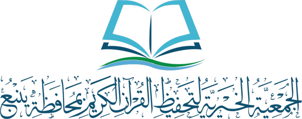
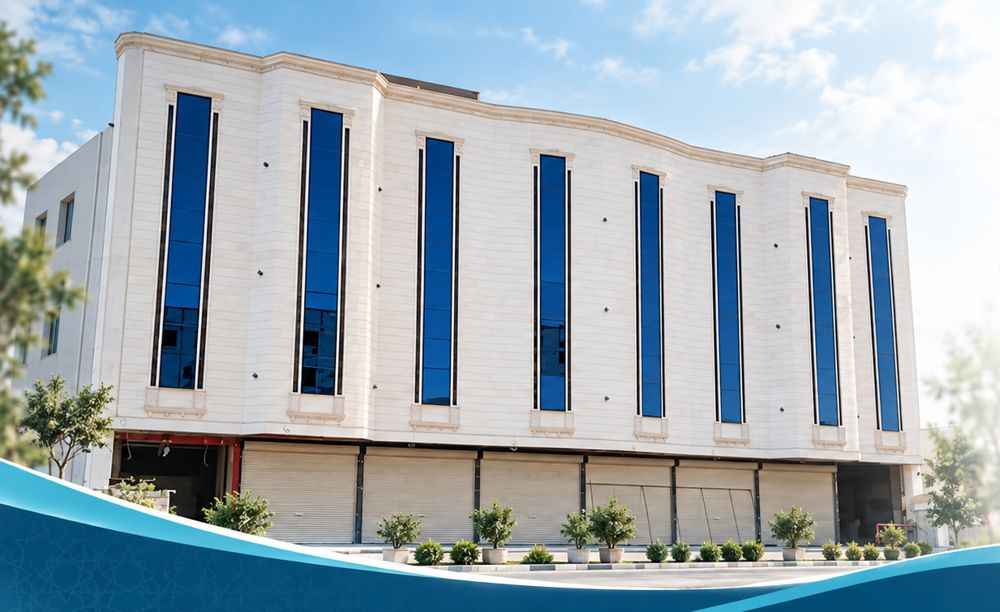

الجمعية الخيرية لتحفيظ القرآن الكريم بمحافظة ينبع
برٌّ لا ينقطع.. وأثرٌ يبقى
أنشئ حملة صدقة جارية باسم فقيدك في أحد مشاريع الجمعية، وشاركها مع أهلك والمعزّين؛ فتذهب الحصيلة كاملة إلى المشروع الذي اخترته.
حين يتوفى أحد أفراد الأسرة، يبحث أهله عن عمل صالح يُهدونه له، ويسأل المعزّون عمّا يقدّمونه غير الحضور والدعاء. «حملة الفقيد» تجمع هذا البرّ في وجهة محلية موثوقة، وتوجّهه إلى مشاريع الجمعية القائمة.
«إذا مات الإنسانُ انقطع عنه عملُه إلا من ثلاثة: إلا من صدقةٍ جارية، أو علمٍ يُنتفع به، أو ولدٍ صالحٍ يدعو له»
رواه مسلمالأهل هم من يبادرون بإنشاء الحملة ونشرها، والجمعية توفّر المشروع والتوثيق والشكر.
يصل الأهلَ إعلانُ المشروع عبر قنوات الجمعية أو المعارف.
يتواصل أحدهم مع الجمعية، ويُنشئ حملة باسم الفقيد، ويختار مشروعها.
يحصل على رابط الحملة، وبطاقة باسم الفقيد، ونص رسالة للمعزّين.
ينشر الأهل الرابط في مجموعات العائلة والمعارف.
تُقيَّد التبرعات في حساب المشروع المختار وحده.
ترسل الجمعية للأهل الشكر وبيان الحصيلة عند إغلاق الحملة.
كلها مشاريع قائمة لدى الجمعية بقيم معتمدة، والحصيلة تذهب كاملة إلى المشروع المختار.
حلقةٌ يُحفظ فيها كتاب الله عامًا دراسيًا كاملًا، وأجرها لفقيدك بإذن الله.
مصاحف يُتلى فيها كتاب الله آناء الليل وأطراف النهار، صدقةً جاريةً عنه.
طالبٌ يحفظ كتاب الله عامًا دراسيًا كاملًا، ويجري أجره لفقيدك بإذن الله.

وقفٌ قائم ينفع ما بقي، وأجره جارٍ عن فقيدك بإذن الله.
تبرعات سهم وقف الأم تُورَد في حساب الوقف المستقل وحده، ولا تُخلط بأموال الكفالات. ويمكن إضافة مشاريع أخرى من مشاريع الجمعية مسارًا جديدًا متى رأت الإدارة ذلك.
للمشروع ثلاث فئات: من يُنشئ الحملة، ومن يتبرّع فيها، ومن ينتفع بحصيلتها.
حملة باسم فقيدها دون تكلفة، وبطاقة ورسالة جاهزتان، وبيان بالحصيلة وما تحقق بها.
وجهة موثوقة لإهداء الأجر في مشروع معتمد، وإيصال إلكتروني.
طلاب الحلقات وطالباتها، والدارسات، وقرّاء المصاحف، وريع وقف دائم.
لا يُنتقل إلى التشغيل الكامل إلا بقرار من مجلس الإدارة بعد التقييم.
المراجعة الشرعية للنصوص، وتجهيز صفحة الحملات، وإنتاج المواد.
نشر المواد، ومتابعة الحملات، وشكر الأهل وإفادتهم بالحصيلة.
قياس المؤشرات، ورفع تقرير لجنة تنمية الموارد المالية إلى المجلس.
تعميم المشروع، والتعريف به لدى أئمة الجوامع ولجان الأحياء، وتقرير سنوي للمجلس.
لا يحتاج المشروع ميزانية مستقلة، ولا يُقتطع من حصيلة الحملات شيء للتشغيل؛ فكل ريال يذهب إلى المشروع الذي اختاره أهل الفقيد.
| ما يحتاجه المشروع | من يوفّره |
|---|---|
| صفحة إنشاء الحملات ورمز QR | متجر الجمعية الإلكتروني القائم |
| المواد التسويقية | فريق التسويق الإلكتروني |
| النشر والتعريف | قنوات الجمعية وحساباتها |
| متابعة الحملات وشكر الأهل | الإدارة التنفيذية |
| قيد التبرعات وإصدار البيانات | الشؤون المالية |
يعمل المشروع تحت إشراف لجنة تنمية الموارد المالية، وتُعرض حصيلته على مجلس الإدارة في تقريرها الدوري.
كل تبرع في حساب مشروعه المختار.
أموال وقف الأم في حسابه وحده.
الاسم الثلاثي دون ألقاب أو مبالغة.
لا صور للفقيد، والحملة من أقاربه أو بإذنهم.
عبارات رجاء تراجعها جهة شرعية.
إيصال للمتبرع، وبيان للأهل عند الإغلاق.
مسار الاعتماد المعتاد قبل أي نشر.
الحصيلة في تقرير تنمية الموارد الدوري.
| الخطر | المعالجة |
|---|---|
| فهم المشروع استغلالًا لمقام العزاء | إعلان عام دون تواصل مباشر مع الأسر، والمبادرة منها، ونبرة عزاء لا تسويق |
| حملة باسم متوفى دون علم أهله | التحقق من صلة منشئ الحملة بالفقيد قبل اعتمادها |
| ضعف الإقبال في البداية | تجربة ثلاثة أشهر بمؤشرات، ثم تعديل الرسائل والقنوات |
| قصور المنصة عن الحملات الفردية | التحقق من جاهزية المتجر في مرحلة التأسيس |
واجعل عزاءه صدقةً جارية لا ينقطع أجرها بإذن الله.